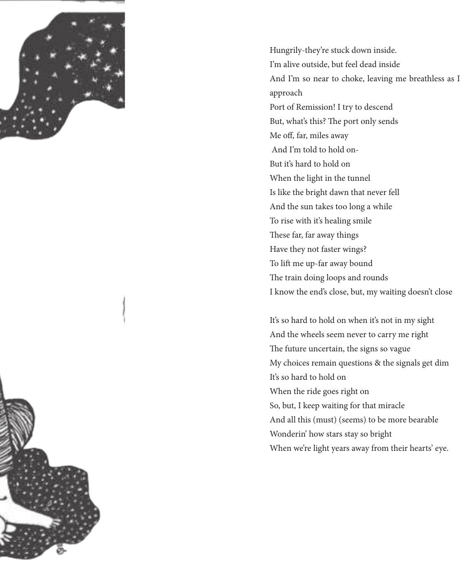

Hungrily-they’re stuck down inside.
I’m alive outside, but feel dead inside
And I’m so near to choke, leaving me breathless as I
approach
Port of Remission! I try to descend
But, what’s this? e port only sends
Me o, far, miles away
And I’m told to hold on-
But it’s hard to hold on
When the light in the tunnel
Is like the bright dawn that never fell
And the sun takes too long a while
To rise with it’s healing smile
ese far, far away things
Have they not faster wings?
To li me up-far away bound
e train doing loops and rounds
I know the end’s close, but, my waiting doesn’t close
It’s so hard to hold on when it’s not in my sight
And the wheels seem never to carry me right
e future uncertain, the signs so vague
My choices remain questions & the signals get dim
It’s so hard to hold on
When the ride goes right on
So, but, I keep waiting for that miracle
And all this (must) (seems) to be more bearable
Wonderin’ how stars stay so bright
When we’re light years away from their hearts’ eye.